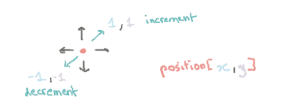

GoogleCTF Beginner's Quest 2019 - Drive to the Target
Description
Excellent work! With your fine sleuthing skills, you managed to find a picture of the handsome creature with its pet biped. At last friends and companionship may be near!
Like all inhabitants of this world, you spend an inordinate amount of time on the site, stalking and comparing your life to that of others. The first thought that springs to your mind is “Why haven’t I ever been to Mauritius on holiday?” followed swiftly by “What is a Mauritius anyway?” But after a while and with language successfully deciphered, you’ve made contact with the lifeform in the picture, you have a “date”? You’re given the address of where to meet your potential interest. “1 Banana way, beware of the glass.” An odd address, especially that last part. So how do you get there? You land your ship and begin to search.
Solving
Clicking on every button available gives the following messages:
You went 6m at a speed of 1km/h. You are getting away…If you want to meet your friends, you should move.(when not changing the direction and hitting go)You went 22m at a speed of 19km/h. You are getting closer…Woa, were about to move at 181km/h, this is too fast!Please use roads(when using the URL https://drivetothetarget.web.ctfcompetition.com/?lat=0&lon=0&token=0 )
And the source code gives some hints:
<input type="number" name="lat" value="51.6485" min="-90" max="90" step="0.0001">
<input type="number" name="lon" value="0.0983" min="-180" max="180" step="0.0001">
- latitude is going from -90 to 90 with a step of 0.0001
- longitude is going from -180 to 180 with a step of 0.0001
Automating the HTTP request
I heard lots of good about the requests Python library which is a library to easily create/manipulate HTTP requests/answer. Install it with:
$ pip install --user requests
Okay, let’s start automating this then… Here’s a script making one HTTP get request:
# import the request library https://2.python-requests.org/en/master/
import requests
# URL of the request
URL = "https://drivetothetarget.web.ctfcompetition.com"
TOKEN = "gAAAAABdUrowbEIynd4-9pp4NadYBx01nyAtv1XEKh800AF0XQlJGqPtefQwRCy8RQnmWFFDQLMspOv4PDAoQDVTjCbBB7did4ZuaZLMAHTcNVMHig3dFKhaWFWmlkGiU8seJ3Q70ZJW"
def do_get(lat, lon, token=TOKEN):
# define a parameters dictionary
params = {
"lat": lat,
"lon": lon,
"token": TOKEN,
}
# send the get request
response = requests.get(url=URL, params=params)
# print the answer
print(response.text)
if __name__ == '__main__':
do_get("51.6485","0.0983")
The result:
<!doctype html>
<html>
<head>
<link href="/static/style.css" type="text/css" rel="stylesheet"/>
<title>Driving to the target</title>
</head>
<h1>Driving to the target</h1>
<body>
<p>Hurry up, don't be late for you rendez-vous!
<form method="get" action="/">
<fieldset>
<legend>Pick your direction</legend>
<input type="number" name="lat" value="51.6485" min="-90" max="90" step="0.0001">
<input type="number" name="lon" value="0.0983" min="-180" max="180" step="0.0001">
<input style="display: none" name="token" value="gAAAAABdUtJkSxC9nIFlbt4jDsBYHNc1-jz5IsGlM8yU8OFAQpiJ8q70m3-7a7osUQztM4T5bFGJXsigBF7IopAlREfJuv5G4oH71PGjCYnFIUYAvQBARhikWzvvdczPaSyBMoIIekvH">
<button type="submit">go</button>
</fieldset>
</form>
<p>You went 11m at a speed of 0km/h. You are getting closer…</p>
</body>
</html>
Note: I was expecting the you should move message when executing the script twice but:
<!doctype html>
<html>
<head>
<link href="/static/style.css" type="text/css" rel="stylesheet"/>
<title>Driving to the target</title>
</head>
<h1>Driving to the target</h1>
<body>
<p>Hurry up, don't be late for you rendez-vous!
<form method="get" action="/">
<fieldset>
<legend>Pick your direction</legend>
<input type="number" name="lat" value="51.6485" min="-90" max="90" step="0.0001">
<input type="number" name="lon" value="0.0983" min="-180" max="180" step="0.0001">
<input style="display: none" name="token" value="gAAAAABdUtMHLXxKzhF8oR4_NNFzm0AD8vTZDd_6ezGWLYJ2Qmp8ZD8oIQqjcxSLzUpHOeTVf2OmSrxP-cfDPAa1-rygIhIcvsDZJ_s1_cDQfH3tJCSiHUWNdtUz0XxmVRPgMjE8ijIW">
<button type="submit">go</button>
</fieldset>
</form>
<p>You went 11m at a speed of 0km/h. You are getting closer…</p>
</body>
</html>
We are just moving at 0km/h :DD
Way too much text in that answer, let’s trim it down!
Parsing the HTTP response
Parsing HTML by hand is… complicated. Here’s another Python library to the rescue: Beautiful Soup
$ pip install --user beautifulsoup4
Now, add the import at the beginning of the file:
# import beautifulsoup library
from bs4 import BeautifulSoup
And replace the print(response.text) with:
# create a soup by parsing the HTTP answer
soup = BeautifulSoup(response.text, "html.parser")
print(soup.p)
Which gives weird results…?!
<p>Hurry up, don't be late for you rendez-vous!
<form action="/" method="get">
<fieldset>
<legend>Pick your direction</legend>
<input max="90" min="-90" name="lat" step="0.0001" type="number" value="51.6485"/>
<input max="180" min="-180" name="lon" step="0.0001" type="number" value="0.0983"/>
<input name="token" style="display: none" value="gAAAAABdUy4mP5vZE9nBWS7KIEt4tprE0n-oRO0NaEYM6HMYV_liDPO34ok39b1RLG5p3H__ZoQG6CIKodZIMv2rSzNjdZt_FSTesJpSLsfkU919LFIuAP2SrGpmi2_CHh69ITzJ4iNt"/>
<button type="submit">go</button>
</fieldset>
</form>
<p>You went 11m at a speed of 0km/h. You are getting closer…</p>
</p>
I should only prints the 2 <p> in the HTML… Why is there a <form> and other misc stuff?!
Ooooh. That’s why. The second <p> is included in the first <p>… Well, that’s easy to fix in beautiful soup, we can just tell it to search for a <p> inside a <p>:
# create a soup by parsing the HTTP answer
soup = BeautifulSoup(response.text, "html.parser")
print(soup.select("p > p")[0])
Which output:
<p>You went 11m at a speed of 0km/h. You are getting closer…</p>
The Token Issue
For some mysterious reason, I assumed that the token was a fixed value… Which is probably why my script was moving at 0km/h…
lat 51.6498 lon 0.0982 <p>You went 133m at a speed of 0km/h. You are getting away…</p>
lat 51.6497 lon 0.0982 <p>You went 122m at a speed of 0km/h. You are getting away…</p>
lat 51.6496 lon 0.0982 <p>You went 111m at a speed of 0km/h. You are getting away…</p>
lat 51.6495 lon 0.0982 <p>You went 100m at a speed of 0km/h. You are getting away…</p>
lat 51.6494 lon 0.0982 <p>You went 89m at a speed of 0km/h. You are getting away…</p>
lat 51.6493 lon 0.0982 <p>You went 78m at a speed of 0km/h. You are getting away…</p>
lat 51.6492 lon 0.0982 <p>You went 67m at a speed of 0km/h. You are getting away…</p>
lat 51.6491 lon 0.0982 <p>You went 56m at a speed of 0km/h. You are getting away…</p>
lat 51.649 lon 0.0982 <p>You went 45m at a speed of 0km/h. You are getting away…</p>
lat 51.6489 lon 0.0982 <p>You went 34m at a speed of 0km/h. You are getting away…</p>
lat 51.6488 lon 0.0982 <p>You went 23m at a speed of 0km/h. You are getting away…</p>
lat 51.6487 lon 0.0982 <p>You went 13m at a speed of 0km/h. You are getting away…</p>
lat 51.6486 lon 0.0982 <p>You went 6m at a speed of 0km/h. You are getting closer…</p>
lat 51.6485 lon 0.0982 <p>You went 13m at a speed of 0km/h. You are getting closer…</p>
lat 51.6484 lon 0.0982 <p>You went 23m at a speed of 0km/h. You are getting closer…</p>
lat 51.6483 lon 0.0982 <p>You went 34m at a speed of 0km/h. You are getting closer…</p>
lat 51.6482 lon 0.0982 <p>You went 45m at a speed of 0km/h. You are getting closer…</p>
lat 51.6481 lon 0.0982 <p>You went 56m at a speed of 0km/h. You are getting closer…</p>
lat 51.648 lon 0.0982 <p>You went 67m at a speed of 0km/h. You are getting closer…</p>
lat 51.6479 lon 0.0982 <p>You went 78m at a speed of 0km/h. You are getting closer…</p>
lat 51.6478 lon 0.0982 <p>You went 89m at a speed of 0km/h. You are getting closer…</p>
Let’s fix the HTTP parser and use the latest token value for the next HTTP request:
def do_get(position, token):
# define a parameters dictionary
params = {
"lat": position[0],
"lon": position[1],
"token": token,
}
# send the get request
response = requests.get(url=URL, params=params)
# create a soup by parsing the HTTP answer
soup = BeautifulSoup(response.text, "html.parser")
lat = float(soup.find(attrs={"name": "lat"})["value"])
lon = float(soup.find(attrs={"name": "lon"})["value"])
token = soup.find(attrs={"name": "token"})["value"]
message = str(soup.select("p > p")[0])
print("lat: {:02.04f} | lon {:02.04f} | {}".format(lat, lon, message))
return {"lat": lat, "lon": lon, "token": token, "msg": message}
While we are fixing the HTTP parser part… Why not improve the handling of the response message also? Pure text is not practical at all! Let’s define an enum containing all the types of messages:
from enum import Enum
class Message(Enum):
CLOSER = 1
AWAY = 2
TOO_FAST = 3
MOVE = 4
FLAG = 5
WTF = 10
That way, we can use message == Message.CLOSER instead of if "closer" in message which is more practical.
Use the enum in do_get():
def do_get(position, token):
# define a parameters dictionary
params = {
"lat": position[0],
"lon": position[1],
"token": token,
}
# send the get request
response = requests.get(url=URL, params=params)
# create a soup by parsing the HTTP answer
soup = BeautifulSoup(response.text, "html.parser")
lat = float(soup.find(attrs={"name": "lat"})["value"])
lon = float(soup.find(attrs={"name": "lon"})["value"])
token = soup.find(attrs={"name": "token"})["value"]
message = str(soup.select("p > p")[0])
if "away" in message:
msg = Message.AWAY
elif "closer" in message:
msg = Message.CLOSER
elif "fast" in message:
msg = Message.TOO_FAST
elif "move" in message:
msg = Message.MOVE
elif "CTF{" in message:
msg = Message.FLAG
else:
msg = Message.WTF
print("lat: {:02.04f} | lon {:02.04f} | {}".format(lat, lon, msg))
return {"lat": lat, "lon": lon, "token": token, "msg": msg}
The Too Fast mystery
In spite of my weirdly inefficient algorithm, I keep hitting the “too fast” limit… But, what was odd was the pattern, it wasn’t random at all:
- away or closer message
- 4x “too fast” messages (sometimes 5)
lat 51.6498 lon 0.0982 Message.AWAY
lat 51.6498 lon 0.0982 Message.TOO_FAST
lat 51.6498 lon 0.0982 Message.TOO_FAST
lat 51.6498 lon 0.0982 Message.TOO_FAST
lat 51.6498 lon 0.0982 Message.TOO_FAST
lat 51.6497 lon 0.0981 Message.CLOSER
lat 51.6497 lon 0.0981 Message.TOO_FAST
lat 51.6497 lon 0.0981 Message.TOO_FAST
lat 51.6497 lon 0.0981 Message.TOO_FAST
lat 51.6497 lon 0.0981 Message.TOO_FAST
lat 51.6498 lon 0.0982 Message.AWAY
lat 51.6498 lon 0.0982 Message.TOO_FAST
lat 51.6498 lon 0.0982 Message.TOO_FAST
lat 51.6498 lon 0.0982 Message.TOO_FAST
lat 51.6498 lon 0.0982 Message.TOO_FAST
lat 51.6498 lon 0.0982 Message.TOO_FAST
lat 51.6497 lon 0.0981 Message.CLOSER
After a few tests, I discovered that the rate of my HTTP requests was too high. Add a sleep(1) after each request to make those pesky “too fast” messages disappear!
lat 51.6498 lon 0.0982 Message.AWAY
lat 51.6497 lon 0.0981 Message.CLOSER
lat 51.6498 lon 0.0982 Message.AWAY
lat 51.6497 lon 0.0981 Message.CLOSER
lat 51.6498 lon 0.0982 Message.AWAY
lat 51.6497 lon 0.0981 Message.CLOSER
lat 51.6498 lon 0.0982 Message.AWAY
Also, you might have noticed, my algorithm is stuck in a loop now…
Getting Out of the Loop
So far, my “guess of the direction” was pretty limited:
STEP = 0.0001
def increment(position, lat=True, lon=True, step=STEP):
if lat:
position[0] = round(position[0] + step, 4)
if lon:
position[1] = round(position[1] + step, 4)
return position
def decrement(position, lat=True, lon=True, step=STEP):
if lat:
position[0] = round(position[0] - step, 4)
if lon:
position[1] = round(position[1] - step, 4)
return position
It was nothing more than “go in a diagonal if it’s closer else go back in a diagonal if it’s away”.

Let’s code something a bit more fancy… We will add a direction vector, which can take 4 values (one for each direction).
First a function to move! You give it a direction and a position, and it computes the new position:
def move(direction, position):
position[0] = round(position[0] + STEP * direction[0], 4)
position[1] = round(position[1] + STEP * direction[1], 4)
return position
Next, we will implemented a super clever (or not) function to guess a direction! In case we are going away from the target, let’s just pick a random new direction :)))
import random
def change_direction(direction):
directions = [(-1, 0), (1, 0), (0, -1), (0, 1)]
directions.remove(direction)
new_direction = random.choice(directions)
logging.info("# New direction: {}".format(new_direction))
return new_direction
Finally, let’s update our main function to use those new shiny functions:
def guess():
# initial settings
position = [51.6498, 0.0982]
token = "gAAAAABdUrowbEIynd4-9pp4NadYBx01nyAtv1XEKh800AF0XQlJGqPtefQwRCy8RQnmWFFDQLMspOv4PDAoQDVTjCbBB7did4ZuaZLMAHTcNVMHig3dFKhaWFWmlkGiU8seJ3Q70ZJW"
direction = (0, 1)
while(True):
result = do_get(position, token)
token = result["token"]
if result["msg"] == Message.AWAY:
direction = change_direction(direction)
elif result["msg"] == Message.FLAG:
exit(0)
position = move(direction, position)
# don't move too fast!
sleep(1)
if __name__ == '__main__':
guess()
Sample output:
[INFO] lat: 51.6498 | lon 0.0982 | Message.AWAY | gAAAAABdVnSopQig1BcgAP9FR9adm0eVhnIMuOGjR6lzS4o_ydraP5TReHPhEMaQ0IPZDOLIpCbpTULT0c1yLHuU5FXB3B7U3HLzNpzPtaC5RqgEtNZ6lWSRzAekDI23gjZh3V3anW8y
[INFO] # New direction: (-1, 0)
[INFO] lat: 51.6497 | lon 0.0982 | Message.CLOSER | gAAAAABdVnSp2lqdhrJgpoCsBabSaDfUjkZmkZvdzJGHg03Tt6qGgnyBTtcoy4_q3j61_yeIHsCEx4a5Yn05ThaYDS4a7oXBhfNgEMGDkzYGdiAbfo0g0JEuPa2W8wGoBUsr_dwVoAaC
[INFO] lat: 51.6496 | lon 0.0982 | Message.CLOSER | gAAAAABdVnSrs3yaidXLcmtqcupcCilI-FXDxAlxmPc7-Kc5l0ESweHjrp-v0nx1jD3cM3Bt15pQ5n6gyYaj5JExKgXVayfp41nej1gQtsK4F7nfHQPL0riL1dt857SKn9ykckq1PCl3
[INFO] lat: 51.6495 | lon 0.0982 | Message.CLOSER | gAAAAABdVnSsCY_FtXReI6nXDEi50aWOsy1bLLseeiyNGuaA92HdXH9ypgfcFNU94HbmUTS4jWRGUoUrgBy8uuIRFmsUZLP8urxTU7F22JWkXm8XL0EoEqB8IT56xIx8spZBSVSLH5Eq
[INFO] lat: 51.6494 | lon 0.0982 | Message.CLOSER | gAAAAABdVnStsM6Qr3kXKeUcKRTZpdCfS_Lj8VL1deNdkdfmbwasZd9ihPxRtChLpTdl8huwYC_fYtq5Rgth0-hK9tpViCqGWzdwW11ibt_PghQeZLzMhIhyYTsnwz6ayrFHjmt4Vg9z
Let’s leave it running for now… We’ll come back to it when it’s finished!
Looting the Flag
Final version of my script:
#!/usr/bin/env python
"""
Drive to the Target - Google CTF Beginner's Quest 2019
"""
import random
import logging
from enum import Enum
from time import sleep
# import the request library https://2.python-requests.org/en/master/
import requests
# import beautifulsoup library
from bs4 import BeautifulSoup
# URL of the request
URL = "https://drivetothetarget.web.ctfcompetition.com"
STEP = 0.0001
class Message(Enum):
CLOSER = 1
AWAY = 2
TOO_FAST = 3
MOVE = 4
FLAG = 5
WTF = 10
def do_get(position, token):
# define a parameters dictionary
params = {
"lat": position[0],
"lon": position[1],
"token": token,
}
# send the get request
response = requests.get(url=URL, params=params)
# create a soup by parsing the HTTP answer
soup = BeautifulSoup(response.text, "html.parser")
lat = float(soup.find(attrs={"name": "lat"})["value"])
lon = float(soup.find(attrs={"name": "lon"})["value"])
token = soup.find(attrs={"name": "token"})["value"]
message = str(soup.select("p > p")[0])
if "away" in message:
msg = Message.AWAY
elif "closer" in message:
msg = Message.CLOSER
elif "fast" in message:
msg = Message.TOO_FAST
elif "move" in message:
msg = Message.MOVE
elif "CTF{" in message:
msg = Message.FLAG
print("OMG OMG, the flag!! {}".format(message))
else:
msg = Message.WTF
logging.info("lat: {:02.04f} | lon {:02.04f} | {} | {}".format(lat, lon, msg, token))
print("lat: {:02.04f} | lon {:02.04f} | {}".format(lat, lon, msg))
return {"lat": lat, "lon": lon, "token": token, "msg": msg}
def change_direction(direction):
directions = [(-1, 0), (1, 0), (0, -1), (0, 1)]
directions.remove(direction)
new_direction = random.choice(directions)
logging.info("# New direction: {}".format(new_direction))
return new_direction
def move(direction, position):
position[0] = round(position[0] + STEP * direction[0], 4)
position[1] = round(position[1] + STEP * direction[1], 4)
return position
def guess():
# initial settings
position = [51.6498, 0.0982]
token = "gAAAAABdUrowbEIynd4-9pp4NadYBx01nyAtv1XEKh800AF0XQlJGqPtefQwRCy8RQnmWFFDQLMspOv4PDAoQDVTjCbBB7did4ZuaZLMAHTcNVMHig3dFKhaWFWmlkGiU8seJ3Q70ZJW"
direction = (0, 1)
while(True):
result = do_get(position, token)
token = result["token"]
if result["msg"] == Message.AWAY:
direction = change_direction(direction)
elif result["msg"] == Message.FLAG:
exit(0)
position = move(direction, position)
# don't move too fast!
sleep(1)
if __name__ == '__main__':
logging.basicConfig(filename="logs", filemode="w", level=logging.INFO, format="[%(levelname)s] %(message)s")
guess()
After 2 hours of running, my wildly inefficient script managed to locate the flag:
[INFO] # New direction: (0, 1)
[INFO] lat: 51.4922 | lon -0.1929 | Message.CLOSER | gAAAAABdVomcASmkncaGDgxiVsATLNfdsuZdRMFo-ZY7NTxQDECvhsfDl3F6IKv69jV-FK9j40KaKaaGDBXaUCqTuKri51SHV7CBR29bVNdAY3CvPT7D0kQWJtmao4GQ95tj9GMo3MGp
[INFO] lat: 51.4922 | lon -0.1928 | Message.AWAY | gAAAAABdVomdSo3I4jksPlQkX1wuweySHZmHv1XfHCq2oGWgDXYXtKN0PhIi5frRGWA-PM0L8mcFacLwbiqpqPVCXPZM4tHjvA3NZUqiBAJNkW9rMxGIJWHjC9yDQdA-Pm0UGCLqftXS
[INFO] # New direction: (-1, 0)
[INFO] lat: 51.4921 | lon -0.1928 | Message.FLAG | gAAAAABdVomfQUlRPM0kTAjPNGK6rXe5hMrhsbs9_H0bxAN76VVWbVP1afzVkpXS3eM9PwP1PfAJzivGs9M42a_zCHiS5ajeSTZYRKXWk7VuS1KWJ3d8N7_NUAeEkNVjzy9kNXPhiea3
Being a truly exceptional quiche, I managed to forgot to print the flag at the end. Here’s how you lose 2 hours for nothing… Well… Let’s fix the script and run it again then. See you in 2 hours…
[2 hours later]
lat: 51.4927 | lon -0.1930 | Message.CLOSER
lat: 51.4926 | lon -0.1930 | Message.CLOSER
lat: 51.4925 | lon -0.1930 | Message.CLOSER
lat: 51.4924 | lon -0.1930 | Message.CLOSER
lat: 51.4923 | lon -0.1930 | Message.CLOSER
lat: 51.4922 | lon -0.1930 | Message.CLOSER
OMG OMG, the flag!! <p>Congratulations, you made it, here is the flag: CTF{Who_is_Tardis_Ormandy}</p>
lat: 51.4921 | lon -0.1930 | Message.FLAG
Flag: CTF{Who_is_Tardis_Ormandy}
Links
https://realpython.com/python-requests/
https://www.geeksforgeeks.org/get-post-requests-using-python/
https://www.fernandomc.com/posts/using-requests-to-get-and-post/